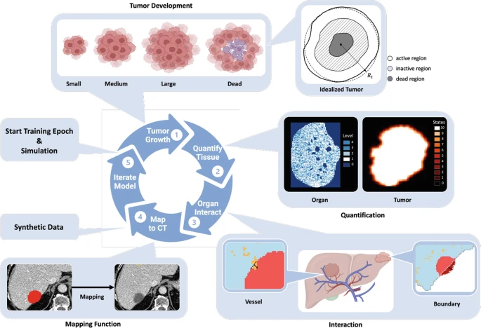
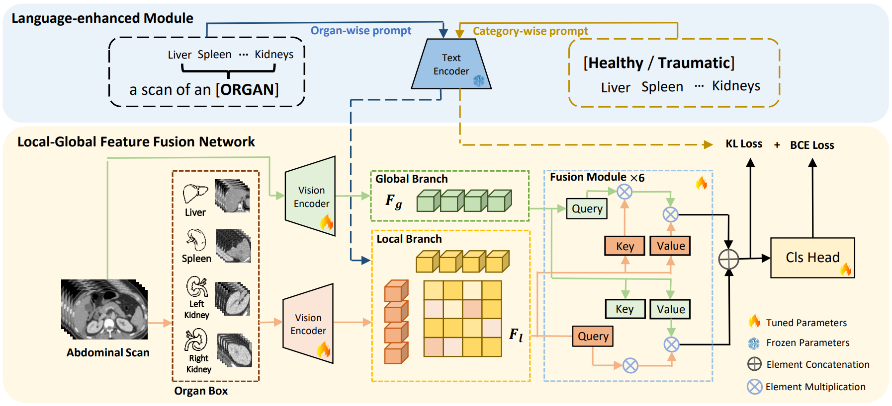
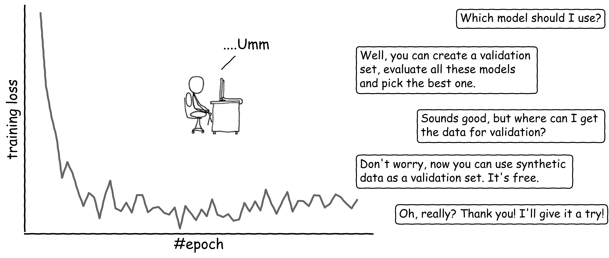

Qixin Hu | 胡琪鑫
PhD Student @USC
Univeristy of Southern California
Los Angeles, USA
Email:qixinhu [at] usc [dot] edu
[Publications] [Internship Experience] [Research Experience]

Qixin Hu | 胡琪鑫PhD Student @USC
|
|
Hi, my name is Qixin Hu (胡琪鑫). If you can't read Pinyin, you can pronounce it as "Chee-sheen Who." Hopefully, I will become Dr. Who someday; that would make it much easier to pronounce.
For now, I am a second-year Ph.D. student at USC, working with Prof. C.-C. Jay Kuo. I am a recipient of the Viterbi Fellowship. My research here lie broadly in representation learning and machine learning. Specifically, I want to design simple and efficient algorithms and apply them to real-world applications.
In the past, I worked on computer vision, deep learning and medical image analysis. I am very fortunate to had opportunities to collaborate with Prof. Qi Dou , Dr. Zongwei Zhou, Prof. Alan Yuille, and Prof. Xinggang Wang. They are really nice people and I enjoy the time working with them.
To the future, I see myself in digging truth and love. Lucky enough, I may find the algorithm to give the birth to a machine.
|  |
Analyzing Tumors by Synthesis
Qi Chen, Yuxiang Lai, Xiaoxi Chen, Qixin Hu, Alan Yuille, Zongwei Zhou |
 |
Language-Enhanced Local-Global Aggregation Network for Multi-Organ Trauma Detection
Jianxun Yu, Qixin Hu, Meirui Jiang, et al. |
 |
Synthetic Data as Validation
Qixin Hu, Alan Yuille, Zongwei Zhou |

|
Animal3D: A Comprehensive Dataset of 3D Animal Pose and Shape
Jiacong Xu, Yi Zhang, Jiawei Peng, Wufei Ma, Artur Jesslen, Pengliang Ji, Qixin Hu, et al. |

|
Label-free Liver Tumor Segmentation
Qixin Hu, Yixiong Chen, Junfei Xiao, Shuwen Sun, Jieneng Chen, Alan Yuille, Zongwei Zhou
Github
[Publication] [Code] [Slides] [Poster] [Zongwei's Talk] [Alan's Talk] |

|
Synthetic Tumors Make AI Segment Tumors Better
Qixin Hu, Junfei Xiao, Yixiong Chen, Shuwen Sun, Jieneng Chen, Alan Yuille, Zongwei Zhou |

|
Object recognition for remarkably small field-of-view with speckles
Qixin Hu, Siyan Xu, Xue-wen Chen, Xinggang Wang, Ken Xingze Wang |
Fulgent Genetics, Los Angeles
|
Department of Computer Science and Engineering, The Chinese Univeristy of Hong Kong
|
|
Department of Cognitive Science and Computer Science, Johns Hopkins Univeristy
|
|
School of Physics, Huazhong Univeristy of Science and Technology
|
|
Last update: May 19, 2025